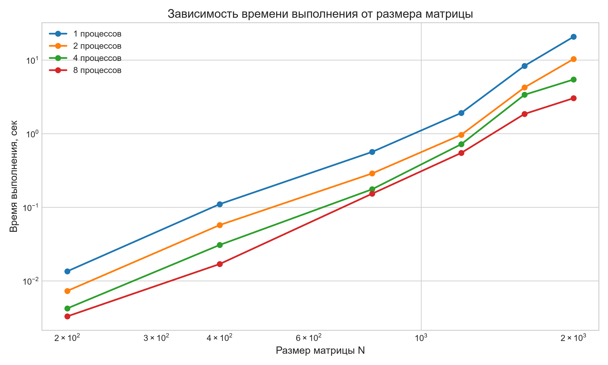
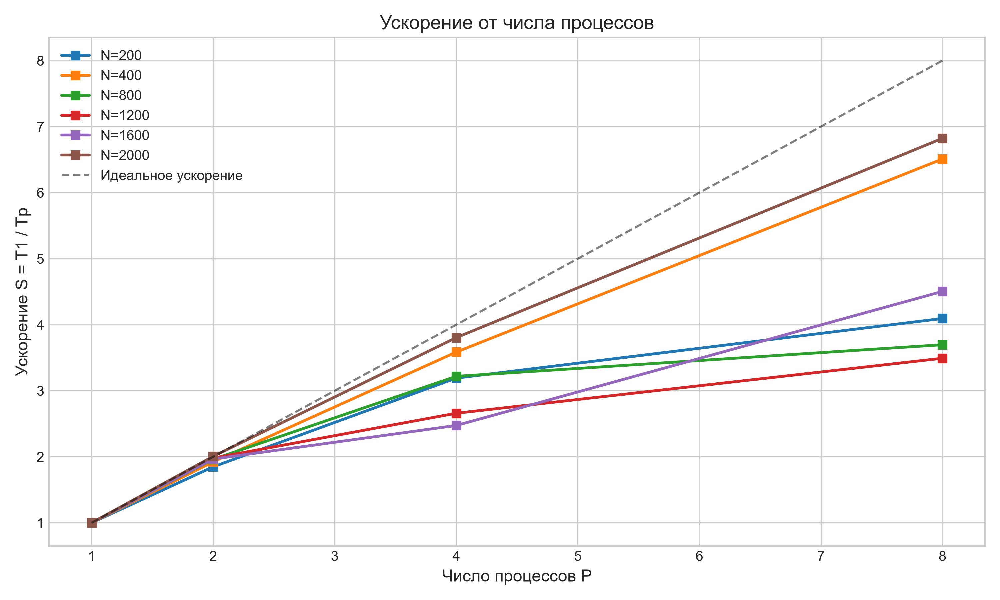
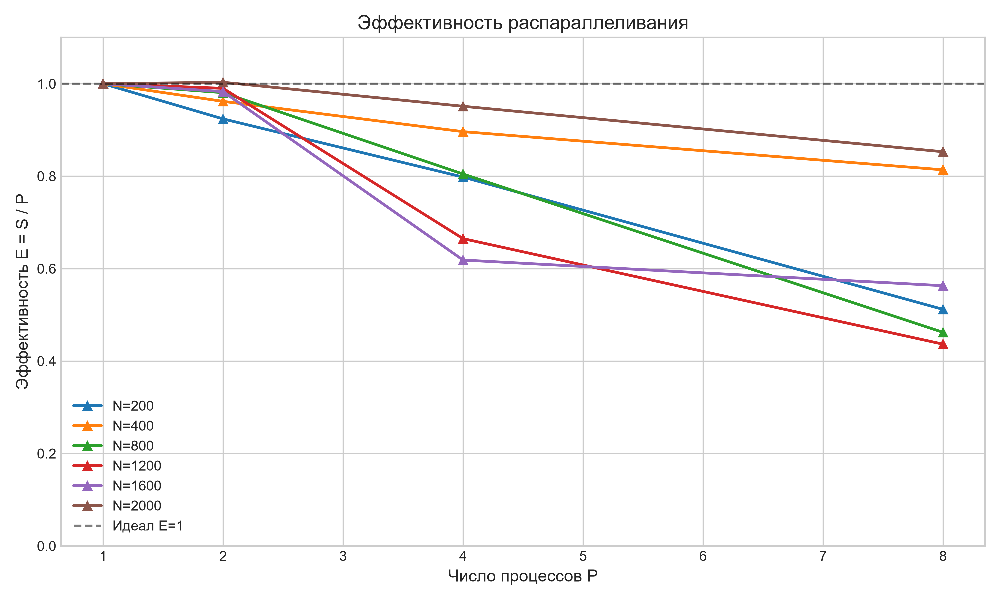

Изучение технологии передачи сообщений MPI на примере задачи умножения квадратных матриц. Исследование зависимости времени выполнения, ускорения и эффективности от размера задачи и числа процессов на суперкомпьютере «Сергей Королёв».
intel/mpi4).mpiicpc (C++11).Использована схема декомпозиции по строкам. Матрица A разрезается на горизонтальные полосы (по числу процессов), которые рассылаются через MPI_Scatter. Матрица B целиком реплицируется на все процессы с помощью MPI_Bcast. После локального умножения результаты собираются на корневом процессе с помощью MPI_Gather.
Ниже представлена таблица времени выполнения (в секундах). Замеры производились после прогрева, время засекалось с помощью MPI_Wtime().
| Размер (N) | 1 процесс | 2 процесса | 4 процесса | 8 процессов |
|---|---|---|---|---|
| 200 | 0.0135 | 0.0073 | 0.0042 | 0.0033 |
| 400 | 0.1101 | 0.0572 | 0.0307 | 0.0169 |
| 800 | 0.5633 | 0.2872 | 0.1750 | 0.1524 |
| 1200 | 1.9061 | 0.9627 | 0.7168 | 0.5459 |
| 1600 | 8.3164 | 4.2303 | 3.3616 | 1.8465 |
| 2000 | 20.6264 | 10.2812 | 5.4213 | 3.0232 |
| N \ P | 1 | 2 | 4 | 8 |
|---|---|---|---|---|
| 200 | 1.00 | 1.85 | 3.19 | 4.09 |
| 400 | 1.00 | 1.92 | 3.59 | 6.51 |
| 800 | 1.00 | 1.96 | 3.22 | 3.70 |
| 1200 | 1.00 | 1.98 | 2.66 | 3.49 |
| 1600 | 1.00 | 1.97 | 2.47 | 4.50 |
| 2000 | 1.00 | 2.01 | 3.80 | 6.82 |
| N \ P | 1 | 2 | 4 | 8 |
|---|---|---|---|---|
| 200 | 1.00 | 0.92 | 0.80 | 0.51 |
| 400 | 1.00 | 0.96 | 0.90 | 0.81 |
| 800 | 1.00 | 0.98 | 0.80 | 0.46 |
| 1200 | 1.00 | 0.99 | 0.66 | 0.44 |
| 1600 | 1.00 | 0.98 | 0.62 | 0.56 |
| 2000 | 1.00 | 1.00 | 0.95 | 0.85 |
На графиках наглядно видно поведение алгоритма при масштабировании.



Малые задачи (N=200): Ускорение на 8 процессах составляет всего 4.09x (эффективность 51%). Это объясняется высокими накладными расходами на коммуникацию (особенно MPI_Bcast для матрицы B). Время на пересылку данных здесь сопоставимо со временем самих вычислений (закон Амдала).
Большие задачи (N=2000): Достигнуто ускорение 6.82x на 8 процессах при эффективности 85%. Вычисления становятся настолько объемными, что накладные расходы на сеть перестают играть критическую роль.
Аномалии на N=800 и N=1200: Заметно проседание эффективности на 8 процессах (до 44-46%). Вероятная причина — конкуренция за пропускную способность памяти и кэш-эффекты, характерные для архитектуры NUMA на вычислительных узлах.
В ходе работы была реализована распределённая MPI-версия умножения матриц. Все прогоны прошли успешную верификацию (PASS). Технология MPI показала высокую эффективность на больших матрицах (ускорение 6.82x), однако для малых задач накладные расходы на пересылку сообщений делают её менее выгодной по сравнению с OpenMP.